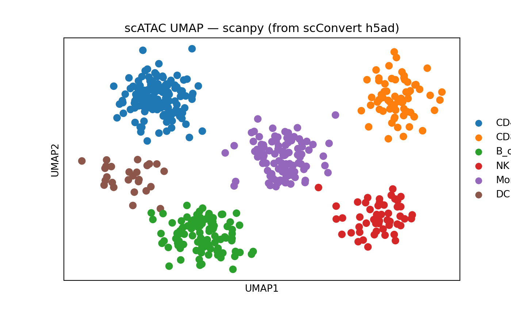

Introduction
Single-cell ATAC-seq (scATAC-seq) measures chromatin accessibility at single-cell resolution. The primary data structure is a peak-by-cell count matrix, where each row represents a genomic region (peak) and each value indicates how many Tn5 insertion events were observed in that region for a given cell.
scATAC-seq data components
| Component | Description | Format |
|---|---|---|
| Peak matrix | Peaks x cells count matrix | Sparse matrix (HDF5, MEX) |
| Fragment file | Per-read genomic coordinates |
fragments.tsv.gz + .tbi index |
| Cell metadata | Per-cell QC and annotations | Data frame |
| Gene annotations | Genomic coordinates for genes | GRanges (GTF/GFF) |
| Motif matrix | TF binding motif enrichment | Matrix in ChromatinAssay |
In R, the Signac package
extends Seurat with the ChromatinAssay class, which wraps
the peak matrix alongside fragment file paths, gene annotations, and
motif information. In Python, scATAC-seq data is typically stored as an
AnnData object (h5ad) with peaks as var and cells as
obs, following the same conventions as scRNA-seq.
Create synthetic scATAC-seq data
We generate a realistic synthetic scATAC-seq dataset with 500 cells
and 2000 peaks. Peak names follow the standard
chr-start-end genomic coordinate format. The count matrix
is 95% sparse, reflecting the typical sparsity of real scATAC-seq
data.
set.seed(42)
n_cells <- 500
n_peaks <- 2000
sparsity <- 0.95
# --- Generate realistic peak names across chromosomes ---
chrom_sizes <- c(
chr1 = 249e6, chr2 = 243e6, chr3 = 198e6, chr4 = 191e6, chr5 = 181e6,
chr6 = 171e6, chr7 = 159e6, chr8 = 145e6, chr9 = 138e6, chr10 = 134e6,
chr11 = 135e6, chr12 = 133e6, chr13 = 114e6, chr14 = 107e6, chr15 = 102e6,
chr16 = 90e6, chr17 = 83e6, chr18 = 80e6, chr19 = 59e6, chr20 = 64e6,
chr21 = 47e6, chr22 = 51e6
)
# Distribute peaks proportionally across chromosomes
peaks_per_chrom <- round(n_peaks * chrom_sizes / sum(chrom_sizes))
peaks_per_chrom[1] <- peaks_per_chrom[1] + (n_peaks - sum(peaks_per_chrom))
peak_names <- character(0)
for (i in seq_along(peaks_per_chrom)) {
chr <- names(peaks_per_chrom)[i]
n <- peaks_per_chrom[i]
if (n <= 0) next
starts <- sort(sample(seq(10000, chrom_sizes[i] - 2000, by = 1000), n))
widths <- sample(500:1500, n, replace = TRUE)
peak_names <- c(peak_names, paste0(chr, "-", starts, "-", starts + widths))
}
peak_names <- peak_names[seq_len(n_peaks)]
# --- Generate cell barcodes ---
barcodes <- paste0("CELL_", sprintf("%04d", seq_len(n_cells)), "-1")
# --- Generate sparse count matrix (95% sparsity) ---
n_nonzero <- round(n_peaks * n_cells * (1 - sparsity))
rows <- sample(n_peaks, n_nonzero, replace = TRUE)
cols <- sample(n_cells, n_nonzero, replace = TRUE)
vals <- rpois(n_nonzero, lambda = 2) + 1L # counts >= 1
counts <- sparseMatrix(
i = rows, j = cols, x = vals,
dims = c(n_peaks, n_cells),
dimnames = list(peak_names, barcodes)
)
cat("Matrix dimensions:", nrow(counts), "peaks x", ncol(counts), "cells\n")
#> Matrix dimensions: 2000 peaks x 500 cells
cat("Sparsity:", round(1 - nnzero(counts) / (nrow(counts) * ncol(counts)), 3), "\n")
#> Sparsity: 0.951Load into Signac ChromatinAssay
We create a ChromatinAssay and wrap it in a Seurat
object, then add metadata and embeddings to produce a complete
scATAC-seq object.
# Create a ChromatinAssay (without fragment file or annotations for portability)
chrom_assay <- CreateChromatinAssay(
counts = counts,
sep = c("-", "-"),
min.cells = 0,
min.features = 0
)
# Create Seurat object
pbmc_atac <- CreateSeuratObject(
counts = chrom_assay,
assay = "ATAC"
)
cat("Cells:", ncol(pbmc_atac), "\n")
#> Cells: 500
cat("Peaks:", nrow(pbmc_atac), "\n")
#> Peaks: 2000
cat("Assay class:", class(pbmc_atac[["ATAC"]])[1], "\n")
#> Assay class: ChromatinAssay
# Inspect peak names (genomic coordinates)
head(rownames(pbmc_atac), 5)
#> [1] "chr1-25000-26394" "chr1-112000-113418" "chr1-1916000-1917357"
#> [4] "chr1-1954000-1954614" "chr1-2141000-2142372"Add QC metadata and cell annotations
set.seed(123)
# QC-like metadata
pbmc_atac$nCount_peaks <- colSums(GetAssayData(pbmc_atac, layer = "counts"))
pbmc_atac$nucleosome_signal <- runif(n_cells, 0.2, 2.0)
pbmc_atac$TSS_enrichment <- runif(n_cells, 2, 15)
pbmc_atac$pct_reads_in_peaks <- runif(n_cells, 0.3, 0.9)
# Cell-type annotations (as factor)
cell_types <- factor(
sample(c("CD4_T", "CD8_T", "B_cell", "NK", "Monocyte", "DC"),
n_cells, replace = TRUE,
prob = c(0.30, 0.15, 0.20, 0.10, 0.20, 0.05)),
levels = c("CD4_T", "CD8_T", "B_cell", "NK", "Monocyte", "DC")
)
pbmc_atac$cell_type <- cell_types
pbmc_atac$seurat_clusters <- factor(as.integer(cell_types) - 1L)
# Add fake UMAP coordinates (cluster-structured for visualization)
umap_centers <- matrix(c(
-5, 3, # CD4_T
5, 3, # CD8_T
-3, -4, # B_cell
4, -3, # NK
0, 0, # Monocyte
-6, -1 # DC
), ncol = 2, byrow = TRUE)
umap_coords <- matrix(0, nrow = n_cells, ncol = 2)
for (i in seq_len(n_cells)) {
ct <- as.integer(cell_types[i])
umap_coords[i, ] <- umap_centers[ct, ] + rnorm(2, sd = 0.8)
}
colnames(umap_coords) <- c("umap_1", "umap_2")
rownames(umap_coords) <- barcodes
pbmc_atac[["umap"]] <- CreateDimReducObject(
embeddings = umap_coords,
key = "umap_",
assay = "ATAC"
)
cat("Metadata columns:", paste(colnames(pbmc_atac[[]]), collapse = ", "), "\n")
#> Metadata columns: orig.ident, nCount_ATAC, nFeature_ATAC, nCount_peaks, nucleosome_signal, TSS_enrichment, pct_reads_in_peaks, cell_type, seurat_clusters
cat("Reductions:", paste(Reductions(pbmc_atac), collapse = ", "), "\n")
#> Reductions: umapConvert Signac to h5ad
The writeH5AD() function writes the peak matrix, cell
metadata, and embeddings directly to h5ad format. The
ChromatinAssay peak matrix is extracted as a standard
sparse matrix during conversion.
writeH5AD(pbmc_atac, filename = "pbmc_atac.h5ad", overwrite = TRUE)
cat("h5ad file size:", round(file.size("pbmc_atac.h5ad") / 1024^2, 1), "MB\n")
#> h5ad file size: 0.5 MBThe resulting h5ad file can be loaded in Python with scanpy or episcanpy:
import scanpy as sc
adata = sc.read_h5ad("pbmc_atac.h5ad")
print(adata)
#> AnnData object with n_obs × n_vars = 500 × 2000
#> obs: 'orig.ident', 'nCount_ATAC', 'nFeature_ATAC', 'nCount_peaks', 'nucleosome_signal', 'TSS_enrichment', 'pct_reads_in_peaks', 'cell_type', 'seurat_clusters'
#> obsm: 'X_umap'
print(f"\nPeak names (first 5): {list(adata.var_names[:5])}")
#>
#> Peak names (first 5): ['chr1-25000-26394', 'chr1-112000-113418', 'chr1-1916000-1917357', 'chr1-1954000-1954614', 'chr1-2141000-2142372']
print(f"obsm keys: {list(adata.obsm.keys())}")
#> obsm keys: ['X_umap']
print(f"obs columns: {list(adata.obs.columns)[:10]}")
#> obs columns: ['orig.ident', 'nCount_ATAC', 'nFeature_ATAC', 'nCount_peaks', 'nucleosome_signal', 'TSS_enrichment', 'pct_reads_in_peaks', 'cell_type', 'seurat_clusters']
if "X_umap" in adata.obsm:
sc.pl.umap(adata, color="cell_type", title="scATAC UMAP — scanpy (from scConvert h5ad)")
CLI equivalent
The following examples show how to invoke scConvert from the command line. These use placeholder filenames and are not executed here.
scConvert_cli("pbmc_atac.rds", "pbmc_atac_cli.h5ad")Or from the command line:
Convert h5ad back to Seurat with Signac
When loading an h5ad file that contains a peak matrix,
readH5AD() returns a standard Seurat object. You can then
upgrade the assay to a Signac ChromatinAssay if needed.
# Load the h5ad as a standard Seurat object
atac_loaded <- readH5AD("pbmc_atac.h5ad")
cat("Cells:", ncol(atac_loaded), "\n")
#> Cells: 500
cat("Peaks:", nrow(atac_loaded), "\n")
#> Peaks: 2000
cat("Default assay:", DefaultAssay(atac_loaded), "\n")
#> Default assay: RNA
# Inspect: peak names should be chr-start-end format
head(rownames(atac_loaded), 5)
#> [1] "chr1-25000-26394" "chr1-112000-113418" "chr1-1916000-1917357"
#> [4] "chr1-1954000-1954614" "chr1-2141000-2142372"Upgrade to ChromatinAssay
If you need Signac functionality (e.g., motif analysis, coverage
plots), upgrade the loaded assay to a ChromatinAssay. This
requires re-attaching any Signac-specific annotations.
# Extract the counts matrix from the loaded object
peak_counts <- GetAssayData(atac_loaded, layer = "counts")
# Create a ChromatinAssay from the loaded data
chrom_assay_rt <- CreateChromatinAssay(
counts = peak_counts,
sep = c("-", "-"),
min.cells = 0,
min.features = 0
)
# Replace the assay in the loaded object
atac_loaded[["ATAC"]] <- chrom_assay_rt
cat("Upgraded assay class:", class(atac_loaded[["ATAC"]])[1], "\n")
#> Upgraded assay class: ChromatinAssay
# Optional: re-attach fragment file if available locally
# Fragments(atac_loaded) <- CreateFragmentObject("fragments.tsv.gz")
# Optional: add gene annotations
# library(EnsDb.Hsapiens.v86)
# annotations <- GetGRangesFromEnsDb(ensdb = EnsDb.Hsapiens.v86)
# Annotation(atac_loaded) <- annotationsCLI equivalent
scConvert_cli("pbmc_atac.h5ad", "pbmc_atac_roundtrip.rds")Round-trip fidelity verification
After converting Signac -> h5ad -> Seurat, we verify that key data structures are preserved.
# Reload from h5ad
atac_rt <- readH5AD("pbmc_atac.h5ad")
# --- Dimension check ---
cat("=== Dimensions ===\n")
#> === Dimensions ===
cat("Original: ", ncol(pbmc_atac), "cells x", nrow(pbmc_atac), "peaks\n")
#> Original: 500 cells x 2000 peaks
cat("Roundtrip: ", ncol(atac_rt), "cells x", nrow(atac_rt), "peaks\n")
#> Roundtrip: 500 cells x 2000 peaks
stopifnot(ncol(pbmc_atac) == ncol(atac_rt))
stopifnot(nrow(pbmc_atac) == nrow(atac_rt))
cat("Dimension check PASSED\n\n")
#> Dimension check PASSED
# --- Peak name preservation ---
cat("=== Peak Names ===\n")
#> === Peak Names ===
orig_peaks <- sort(rownames(pbmc_atac))
rt_peaks <- sort(rownames(atac_rt))
cat("Peaks match:", identical(orig_peaks, rt_peaks), "\n")
#> Peaks match: TRUE
stopifnot(identical(orig_peaks, rt_peaks))
cat("Peak name check PASSED\n\n")
#> Peak name check PASSED
# --- Cell barcode preservation ---
cat("=== Cell Barcodes ===\n")
#> === Cell Barcodes ===
orig_cells <- sort(colnames(pbmc_atac))
rt_cells <- sort(colnames(atac_rt))
cat("Barcodes match:", identical(orig_cells, rt_cells), "\n")
#> Barcodes match: TRUE
stopifnot(identical(orig_cells, rt_cells))
cat("Barcode check PASSED\n\n")
#> Barcode check PASSED
# --- Count matrix identity ---
cat("=== Count Matrix Fidelity ===\n")
#> === Count Matrix Fidelity ===
orig_counts <- GetAssayData(pbmc_atac, layer = "counts")
rt_counts <- GetAssayData(atac_rt, layer = "counts")
# Reorder to match
rt_counts <- rt_counts[rownames(orig_counts), colnames(orig_counts)]
cat("Count matrices identical:", identical(as(orig_counts, "dgCMatrix"),
as(rt_counts, "dgCMatrix")), "\n")
#> Count matrices identical: TRUE
stopifnot(all.equal(as.matrix(orig_counts), as.matrix(rt_counts),
check.attributes = FALSE))
cat("Count matrix check PASSED\n\n")
#> Count matrix check PASSED
# --- Metadata preservation ---
cat("=== Cell Metadata ===\n")
#> === Cell Metadata ===
orig_meta_cols <- sort(colnames(pbmc_atac[[]]))
rt_meta_cols <- sort(colnames(atac_rt[[]]))
shared_cols <- intersect(orig_meta_cols, rt_meta_cols)
cat("Original metadata columns:", length(orig_meta_cols), "\n")
#> Original metadata columns: 9
cat("Roundtrip metadata columns:", length(rt_meta_cols), "\n")
#> Roundtrip metadata columns: 11
cat("Shared columns:", length(shared_cols), "\n")
#> Shared columns: 9
# Verify cell_type factor survived
if ("cell_type" %in% shared_cols) {
orig_ct <- as.character(pbmc_atac$cell_type)
names(orig_ct) <- colnames(pbmc_atac)
rt_ct <- as.character(atac_rt$cell_type)
names(rt_ct) <- colnames(atac_rt)
cat("cell_type match:", identical(orig_ct[sort(names(orig_ct))],
rt_ct[sort(names(rt_ct))]), "\n")
}
#> cell_type match: TRUE
# --- Embedding preservation ---
cat("\n=== Embeddings ===\n")
#>
#> === Embeddings ===
if ("umap" %in% Reductions(atac_rt)) {
orig_umap <- Embeddings(pbmc_atac, "umap")
rt_umap <- Embeddings(atac_rt, "umap")
rt_umap <- rt_umap[rownames(orig_umap), ]
umap_rmse <- sqrt(mean((orig_umap - rt_umap)^2))
cat("UMAP RMSE:", umap_rmse, "\n")
stopifnot(umap_rmse < 1e-6)
cat("UMAP check PASSED\n")
} else {
cat("UMAP not found in roundtrip object (may need recomputation)\n")
}
#> UMAP RMSE: 0
#> UMAP check PASSEDMultiome: RNA + ATAC to h5mu
For 10x Multiome experiments (simultaneous RNA + ATAC from the same cells), the h5mu format stores both modalities in a single file. Each assay becomes a separate modality.
set.seed(42)
# --- Generate synthetic RNA data for the same 500 cells ---
n_genes <- 200
n_rna_peaks <- 500 # smaller ATAC assay for the multiome demo
# RNA counts (sparse)
rna_nonzero <- round(n_genes * n_cells * 0.10) # 90% sparse
rna_counts <- sparseMatrix(
i = sample(n_genes, rna_nonzero, replace = TRUE),
j = sample(n_cells, rna_nonzero, replace = TRUE),
x = rpois(rna_nonzero, lambda = 3) + 1L,
dims = c(n_genes, n_cells),
dimnames = list(
paste0("Gene", seq_len(n_genes)),
barcodes
)
)
# Smaller ATAC counts for multiome demo
atac_multiome_counts <- counts[seq_len(n_rna_peaks), ]
# Build a multimodal Seurat object
multiome <- CreateSeuratObject(
counts = CreateChromatinAssay(
counts = atac_multiome_counts,
sep = c("-", "-"),
min.cells = 0,
min.features = 0
),
assay = "ATAC"
)
multiome[["RNA"]] <- CreateAssay5Object(counts = rna_counts)
multiome$cell_type <- cell_types
cat("Assays:", paste(Assays(multiome), collapse = ", "), "\n")
#> Assays: ATAC, RNA
cat("ATAC peaks:", nrow(multiome[["ATAC"]]), "\n")
#> ATAC peaks: 500
cat("RNA genes:", nrow(multiome[["RNA"]]), "\n")
#> RNA genes: 200
cat("Cells:", ncol(multiome), "\n")
#> Cells: 500
# Export both modalities to h5mu
writeH5MU(multiome, filename = "pbmc_atac_multiome.h5mu", overwrite = TRUE)
cat("h5mu file size:", round(file.size("pbmc_atac_multiome.h5mu") / 1024^2, 1), "MB\n")
#> h5mu file size: 0.2 MBLoad h5mu back
multiome_rt <- readH5MU("pbmc_atac_multiome.h5mu")
cat("Assays:", paste(Assays(multiome_rt), collapse = ", "), "\n")
#> Assays: ATAC, RNA
cat("ATAC peaks:", nrow(multiome_rt[["ATAC"]]), "\n")
#> ATAC peaks: 500
cat("RNA genes:", nrow(multiome_rt[["RNA"]]), "\n")
#> RNA genes: 200
cat("Cells:", ncol(multiome_rt), "\n")
#> Cells: 500CLI equivalent
scConvert_cli("multiome.rds", "multiome.h5mu")What is and is not preserved
Preserved during conversion
| Component | Seurat/Signac | h5ad/h5mu | Notes |
|---|---|---|---|
| Peak count matrix |
counts layer |
X |
Sparse matrix, lossless |
| Normalized matrix |
data layer |
X or layers
|
TF-IDF values |
| Cell metadata | meta.data |
obs |
All columns preserved |
| Peak metadata | meta.features |
var |
Feature-level annotations |
| LSI embeddings | reductions$lsi |
obsm['X_lsi'] |
Latent semantic indexing |
| UMAP coordinates | reductions$umap |
obsm['X_umap'] |
Visualization coords |
| Variable features | VariableFeatures() |
var['highly_variable'] |
Top accessible peaks |
| Cluster assignments | meta.data$seurat_clusters |
obs['seurat_clusters'] |
Cell labels |
NOT preserved (Signac-specific)
| Component | Why | Workaround |
|---|---|---|
| Fragment file paths | Local filesystem reference, not data | Copy fragments.tsv.gz + .tbi separately;
re-attach with CreateFragmentObject()
|
| Gene annotations | GRanges object, no h5ad equivalent | Re-add with Annotation() after loading (e.g., from
EnsDb.Hsapiens.v86) |
| Motif matrices | Signac-specific slot | Re-compute with AddMotifs() using a PWM database (e.g.,
JASPAR) |
| ChromatinAssay class | R-specific S4 class | Upgrade with CreateChromatinAssay() after loading (see
above) |
| Links (peak-gene) | Signac-specific slot | Re-compute with LinkPeaks() after re-attaching
annotations |
Practical recommendations
Always transfer fragment files separately. They are large (often >10 GB) and are not embedded in h5ad. Copy both
fragments.tsv.gzandfragments.tsv.gz.tbi.Re-attach annotations after loading. Gene annotations and motif databases are organism-specific and best loaded from canonical sources (Ensembl, JASPAR) rather than serialized.
Peak names encode genomic coordinates. The
chr:start-endformat is preserved asvar_namesin h5ad, so peak identity survives round-trip without loss.For Multiome data, prefer h5mu. It keeps RNA and ATAC in separate modalities within a single file, matching the muon/MuData convention in Python.
See Also
- Multimodal: CITE-seq and Multiome – combining RNA + ATAC or RNA + ADT in a single object
Session Info
sessionInfo()
#> R version 4.5.2 (2025-10-31)
#> Platform: aarch64-apple-darwin20
#> Running under: macOS Tahoe 26.3
#>
#> Matrix products: default
#> BLAS: /System/Library/Frameworks/Accelerate.framework/Versions/A/Frameworks/vecLib.framework/Versions/A/libBLAS.dylib
#> LAPACK: /Library/Frameworks/R.framework/Versions/4.5-arm64/Resources/lib/libRlapack.dylib; LAPACK version 3.12.1
#>
#> locale:
#> [1] en_US.UTF-8/en_US.UTF-8/en_US.UTF-8/C/en_US.UTF-8/en_US.UTF-8
#>
#> time zone: America/Indiana/Indianapolis
#> tzcode source: internal
#>
#> attached base packages:
#> [1] stats graphics grDevices utils datasets methods base
#>
#> other attached packages:
#> [1] Matrix_1.7-4 scConvert_0.1.0 Signac_1.16.0 Seurat_5.4.0
#> [5] SeuratObject_5.3.0 sp_2.2-1
#>
#> loaded via a namespace (and not attached):
#> [1] RColorBrewer_1.1-3 jsonlite_2.0.0 magrittr_2.0.4
#> [4] spatstat.utils_3.2-2 farver_2.1.2 rmarkdown_2.30
#> [7] fs_1.6.7 ragg_1.5.0 vctrs_0.7.1
#> [10] ROCR_1.0-12 Rsamtools_2.26.0 spatstat.explore_3.7-0
#> [13] RcppRoll_0.3.1 htmltools_0.5.9 sass_0.4.10
#> [16] sctransform_0.4.3 parallelly_1.46.1 KernSmooth_2.23-26
#> [19] bslib_0.10.0 htmlwidgets_1.6.4 desc_1.4.3
#> [22] ica_1.0-3 plyr_1.8.9 plotly_4.12.0
#> [25] zoo_1.8-15 cachem_1.1.0 igraph_2.2.2
#> [28] mime_0.13 lifecycle_1.0.5 pkgconfig_2.0.3
#> [31] R6_2.6.1 fastmap_1.2.0 MatrixGenerics_1.22.0
#> [34] fitdistrplus_1.2-6 future_1.69.0 shiny_1.13.0
#> [37] digest_0.6.39 patchwork_1.3.2 S4Vectors_0.48.0
#> [40] tensor_1.5.1 RSpectra_0.16-2 irlba_2.3.7
#> [43] GenomicRanges_1.62.1 textshaping_1.0.4 progressr_0.18.0
#> [46] spatstat.sparse_3.1-0 httr_1.4.8 polyclip_1.10-7
#> [49] abind_1.4-8 compiler_4.5.2 bit64_4.6.0-1
#> [52] withr_3.0.2 S7_0.2.1 BiocParallel_1.44.0
#> [55] fastDummies_1.7.5 MASS_7.3-65 tools_4.5.2
#> [58] lmtest_0.9-40 otel_0.2.0 httpuv_1.6.16
#> [61] future.apply_1.20.2 goftest_1.2-3 glue_1.8.0
#> [64] nlme_3.1-168 promises_1.5.0 grid_4.5.2
#> [67] Rtsne_0.17 cluster_2.1.8.2 reshape2_1.4.5
#> [70] generics_0.1.4 hdf5r_1.3.12 gtable_0.3.6
#> [73] spatstat.data_3.1-9 tidyr_1.3.2 data.table_1.18.2.1
#> [76] XVector_0.50.0 BPCells_0.2.0 BiocGenerics_0.56.0
#> [79] spatstat.geom_3.7-0 RcppAnnoy_0.0.23 ggrepel_0.9.7
#> [82] RANN_2.6.2 pillar_1.11.1 stringr_1.6.0
#> [85] spam_2.11-3 RcppHNSW_0.6.0 later_1.4.8
#> [88] splines_4.5.2 dplyr_1.2.0 lattice_0.22-9
#> [91] bit_4.6.0 survival_3.8-6 deldir_2.0-4
#> [94] tidyselect_1.2.1 Biostrings_2.78.0 miniUI_0.1.2
#> [97] pbapply_1.7-4 knitr_1.51 gridExtra_2.3
#> [100] Seqinfo_1.0.0 IRanges_2.44.0 scattermore_1.2
#> [103] stats4_4.5.2 xfun_0.56 matrixStats_1.5.0
#> [106] UCSC.utils_1.6.1 stringi_1.8.7 lazyeval_0.2.2
#> [109] yaml_2.3.12 evaluate_1.0.5 codetools_0.2-20
#> [112] tibble_3.3.1 cli_3.6.5 uwot_0.2.4
#> [115] xtable_1.8-8 reticulate_1.45.0 systemfonts_1.3.1
#> [118] jquerylib_0.1.4 dichromat_2.0-0.1 Rcpp_1.1.1
#> [121] GenomeInfoDb_1.46.2 globals_0.19.1 spatstat.random_3.4-4
#> [124] png_0.1-8 spatstat.univar_3.1-6 parallel_4.5.2
#> [127] pkgdown_2.2.0 ggplot2_4.0.2 dotCall64_1.2
#> [130] bitops_1.0-9 listenv_0.10.1 viridisLite_0.4.3
#> [133] scales_1.4.0 ggridges_0.5.7 crayon_1.5.3
#> [136] purrr_1.2.1 rlang_1.1.7 fastmatch_1.1-8
#> [139] cowplot_1.2.0